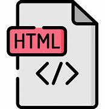
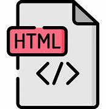

HTML (Lenguaje de Marcas de Hipertexto, del inglés HyperText Markup Language)"Hipertexto" hace referencia a los enlaces que conectan páginas web entre sí, ya sea dentro de un único sitio web o entre sitios web. Los enlaces son un aspecto fundamental de la Web.
Aqui abajo encontraras ejemplos de "Hipertexto".
W3School Tutorial HTML Eelementos 
